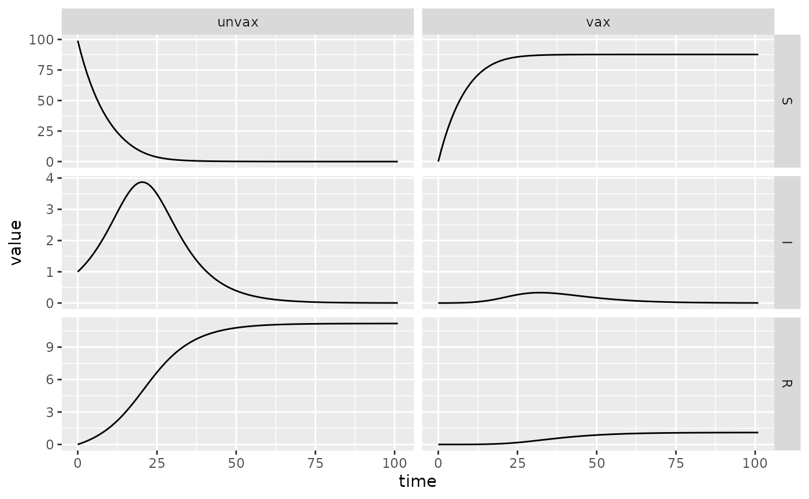

Quickstart Guide, part 2: specifying and simulating a structured compartmental model
Source:vignettes/quickstart2.Rmd
quickstart2.Rmd
library(macpan2)
#> Warning in checkMatrixPackageVersion(): Package version inconsistency detected.
#> TMB was built with Matrix version 1.6.0
#> Current Matrix version is 1.5.4.1
#> Please re-install 'TMB' from source using install.packages('TMB', type = 'source') or ask CRAN for a binary version of 'TMB' matching CRAN's 'Matrix' package
library(dplyr)
#>
#> Attaching package: 'dplyr'
#> The following object is masked from 'package:macpan2':
#>
#> all_equal
#> The following objects are masked from 'package:stats':
#>
#> filter, lag
#> The following objects are masked from 'package:base':
#>
#> intersect, setdiff, setequal, union
library(ggplot2)
library(tidyr)This article is the counterpart to
vignette('quickstart', package = 'macpan2'), but instead of
explaining the spec and sim of a simple SIR, we describe the
new components introduced by trying to specify a
product model. While the new “productify” functionality should make most
of the content of this article obsolete eventually, this article can
serve as a resource for users until then.
SIR Vaccination model
A good place to start with product models is the sir_vax
starter model which stratifies a standard SIR model to include
vaccination status.
print(sir_vax_dir <- system.file("starter_models", "sir_vax", package = "macpan2"))
#> [1] "/home/runner/work/_temp/Library/macpan2/starter_models/sir_vax"As in the case of a simple SIR model the population is
divided into compartments for susceptible, infected, and recovered
individuals. However the population is also divided
into compartments for vaccinated and unvaccinated individuals. So where
a simple SIR model has three compartments the
SIR_vax model has six. This is reflected in the
variables.csv file in the model directory which now has two
columns.
#> Epi ,Vax
#> S ,unvax
#> I ,unvax
#> R ,unvax
#> N ,unvax
#> sigma ,unvax
#> beta ,unvax
#> foi ,unvax
#> infection ,unvax
#> gamma ,unvax
#> S ,vax
#> I ,vax
#> R ,vax
#> N ,vax
#> sigma ,vax
#> beta ,vax
#> foi ,vax
#> infection ,vax
#> gamma ,vax
#> foi ,
#> ,vax_rateThe row of the file specifies the name of each column; so the first
column is called Epi and the second column is called
Vax. predictably the Epi column lists
compartment and parameter names relevant to epidemiological status and
the Vax column similarly relates to vaccination status.
Some parameters (e.g. gamma) which in an SIR
model have a single value now have two values to reflect the differences
in behavior in vaccinated and unvaxxinated people. Other parameters
(e.g. vax_rate) have only a single value (in this case
because only susceptible people will be vaccinated). Epi
parameters that vary based on vax status will have the parameter name
repeated in the Epi column but will have differing status
labels in the Vax column. When referring to specific
compartments or parameters we concatenate their labels in each column
with a ., so the compartment for the unvaccinated
susceptible population is called S.unvax. If a variable has
no label in a given column then that entry is left blank but the
concatonation dot is still included (so vax_rate is
properly referred to as .vax_rate).
Flows in product models are specified by the flows.csv
file in the model definition directory.
#> from ,to ,flow ,type ,from_partition ,to_partition ,flow_partition ,from_to_partition ,from_flow_partition ,to_flow_partition
#> S ,I ,infection ,per_capita ,Epi ,Epi ,Epi ,Vax ,Vax ,Null
#> I ,R ,gamma ,per_capita ,Epi ,Epi ,Epi ,Vax ,Vax ,Null
#> S.unvax ,S.vax ,vax_rate ,per_capita ,Epi.Vax ,Epi.Vax ,Vax , , ,NullNotice that the three right most columns, which unused in single
stratum models now have an important role. In particular they are there
to ensure that compartments of one stratum flow into other compartments
of the same stratum. Without them the S.vax compartment
would have flows both to I.vax and I.unvax.
There are three such columns from_to_partition,
from_flow_partition and to_flow_partition, in
general two of these columns should have entries and the third should be
blank or have the null_partition label specified in
settings.json. The from_to_partition column
indicates which partitions should be used to math from and
to compartments. In the example the flow from
S to I indicates the Vax
partition should be used so S.vax flows to
I.vax and S.unvax to I.unvax. The
from_flow_partition column indicates which partition should
be used to match from compartments with flow variables. In
this example the flow from I to R has
Vax in the from_flow_partition so the flow
from I.unvax to R.unvax is matched with the
gamma.unvax variable. In principle the
to_flow_partition column can be used to match flow
parameters to flow via their to compartment rather than
their from compartment however in this example we have used
the other two columns so the to_flow_column has a
Null entry. Notice that the flow from S.unvax
to S.vax is different from the other flows because there
are no corresponding flows from I.unvax to
I.vax or from R.unvax to R.vax.
In this case the from_partition and the
to_partition are both Epi.Vax because the
from and to compartments are specified using
both partitions, the flow_partition is specified as
Vax because the rate of vaccination is governed by the
.dose_rate variable which has no entry in the
Epi partition. There is no need to use the final three
columns since the compartments involved in the flow are given explicitly
rather than as a group as was the case for the other flows.
#> [
#> {
#> "group_partition" : "Vax",
#> "group_names" : ["unvax", "vax"],
#> "output_partition" : "Epi.Vax",
#> "output_names" : ["N.unvax", "N.vax"],
#> "simulation_phase" : "during_pre_update",
#> "input_partition" : "Epi",
#> "arguments" : ["S", "I", "R"],
#> "expression" : "sum(S, I, R)"
#> },
#> {
#> "group_partition" : "Vax",
#> "group_names" : ["unvax", "vax"],
#> "output_partition" : "Epi.Vax",
#> "output_names" : ["foi.unvax", "foi.vax"],
#> "simulation_phase" : "during_pre_update",
#> "input_partition" : "Epi",
#> "arguments" : ["I", "beta", "N"],
#> "expression" : "I * beta / clamp(N)"
#> },
#> {
#> "filter_partition" : "Epi",
#> "filter_names" : ["foi"],
#> "output_partition" : "Epi.Vax",
#> "output_names" : ["foi."],
#> "simulation_phase" : "during_pre_update",
#> "input_partition" : "Vax",
#> "arguments" : ["unvax", "vax"],
#> "expression" : "unvax + vax"
#> },
#> {
#> "filter_partition" : "Epi.Vax",
#> "filter_names" : ["foi.", "sigma.unvax", "sigma.vax", "infection.unvax", "infection.vax"],
#> "group_partition" : "Vax",
#> "group_names" : ["unvax", "vax"],
#> "output_partition" : "Epi.Vax",
#> "output_names" : ["infection.unvax", "infection.vax"],
#> "simulation_phase" : "during_pre_update",
#> "input_partition" : "Epi",
#> "arguments" : ["foi", "sigma"],
#> "expression" : "foi * sigma"
#> }
#> ]The derivations.json file from the model definition
directory largely the same as it would be for single stratum models. On
key distinction is that now each derivation can correspond to multiple
different equations, this is reflected in the existence of multiple
entries in the group_names as well as
output_names fields. If we take the first derivation in the
above file as an example we can see that the expression being evaluated
is sum(S, I, R). The group_names field has
entries unvax and vax (the
group_partition field defines which partition the
group_names are related to). The output_names
field also has two entries N.unvax and N.vax
which are the names of the variables this derivation will compute values
for. Taken together we see that this single derivation produces two
distinct equations,
N.unvax = sum(I.unvax, S.unvax, R.unvax) and
N.vax = sum(S.vax, I.vax, R.vax).
#> {
#> "required_partitions" : ["Epi", "Vax"],
#> "null_partition" : "Null",
#> "state_variables" : ["S.unvax", "I.unvax", "R.unvax", "S.vax", "I.vax", "R.vax"],
#> "flow_variables" : ["infection.unvax", "infection.vax", "gamma.unvax", "gamma.vax", ".vax_rate"]
#> }The only notable difference between the settings.json
files for single stratum and multi-strata models is that multi-strata
models will have multiple required_partitions. It’s also
worth noting that the null_partition entry defines what
should be entered in whichever of the from_to_partition,
from_flow_partition and to_from_partition
isn’t being used in the flows.csv file.
sir_vax = Compartmental(sir_vax_dir)
## TODO: add this 'facet grid' functionality to macpan2helpers::visCompartmental
draw_vis(sir_vax, x_mult = 200, y_mult = 100)
sir_vax_sim = sir_vax$simulators$tmb(time_steps = 100L
, state = c(S.unvax = 99, I.unvax = 1, R.unvax = 0, S.vax = 0, I.vax = 0, R.vax = 0)
, flow = c(
infection.unvax = 0, infection.vax = 0
, gamma.unvax = 0.1, gamma.vax = 0.1
, .vax_rate = 0.1
)
, sigma.unvax = 1
, sigma.vax = 0.01
, beta.unvax = 0.2
, beta.vax = 0.2
, foi.unvax = empty_matrix
, foi.vax = empty_matrix
, foi. = empty_matrix
, N.unvax = empty_matrix
, N.vax = empty_matrix
)
(sir_vax_sim$report()
%>% separate_wider_delim("row", ".", names = c("Epi", "Vax"))
%>% mutate(Epi = factor(Epi, levels = c("S", "I", "R")))
%>% ggplot()
+ facet_grid(Epi~Vax, scales = "free")
+ geom_line(aes(time, value))
)